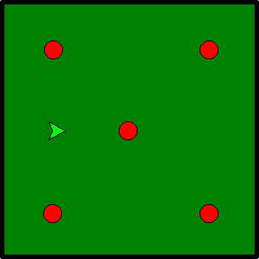

Home
Portfolio
About Me
This is my Portfolio Page!
Snake Game

For our first project, my partner and I decided to make the game Snake. In our version of the game, the player has to answer simple trivia questions in order to get the snake to move. With each correct answer, the snake moves to an apple and eats it, adding an extra segment to its body in the process. If the player answers incorrectly, the snake will run into the border and turn red. The game ends when all five questions are answered corretly and all the apples are eaten.
Apple Sorter

Our second project is an apple sorting game. The user has to click apples as they move across the screen on a conveyor belt. Each red apple clicked adds a point to the player's score while each yellow apple clicked deducts a point. The player has to try to gain the highest score possible in the thirty second time period in order to make it onto the leaderboard.
Car Racing Game
For our Scratch Project we created an endless racing game where the player has to control two cars using the left and right arrow keys. Their goal is to collect as many coins as they can while avoiding the cones.
Sorting Honey Data

In this project, we learned to cleanse and analyze data using methods from the pandas module. We then used the new data to generate various graphs using the matplotlib module.
Ant Simulation

For this project, we had to analyze and answer real world questions about a simulation of our choice. We chose an ant simulation that showed the process in which ants create trails to forage for food. Ants start from the nest and begin to search for one of the three food sources indicated by the blue patches. Once an ant find a food source, it brings a piece of food back to the nest and emits a chemical trail along the way. Other ants can smell this chemical to create trails to the food source.